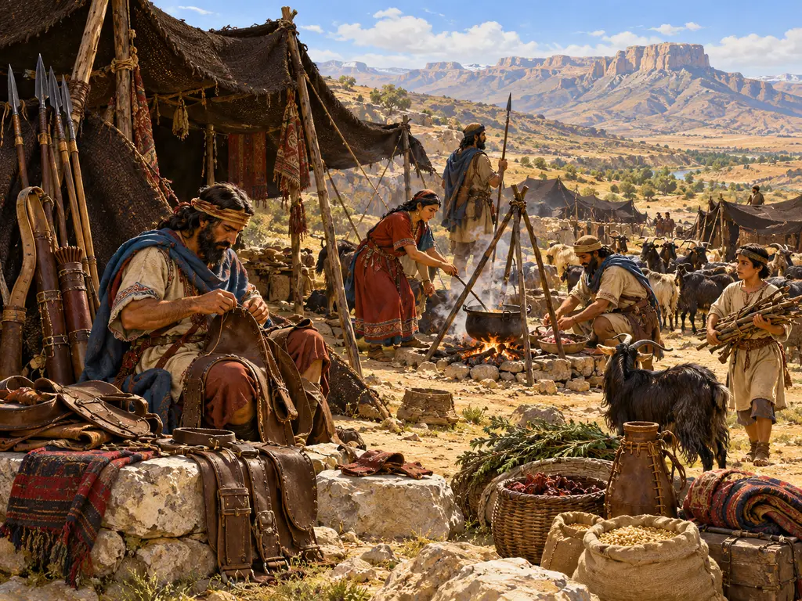
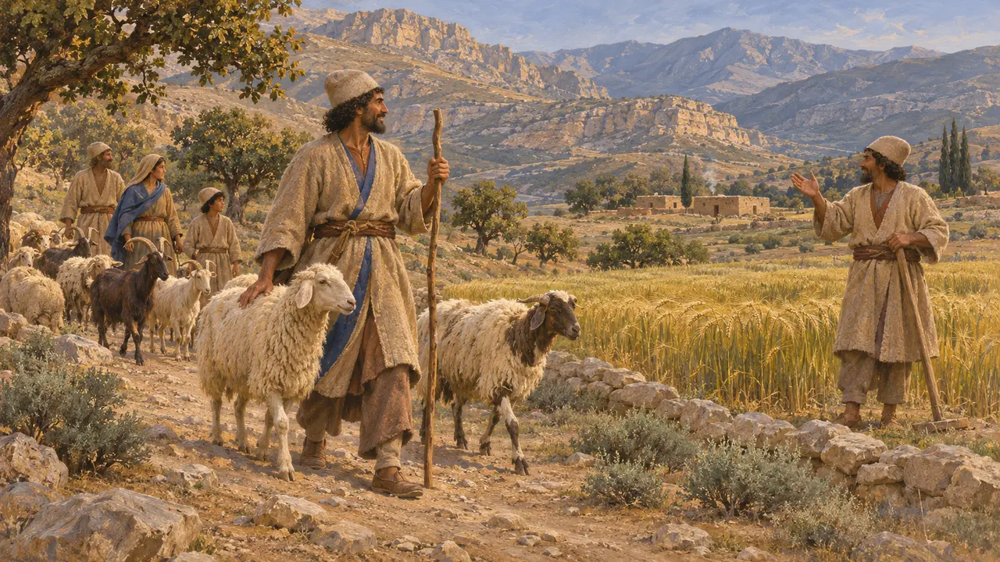
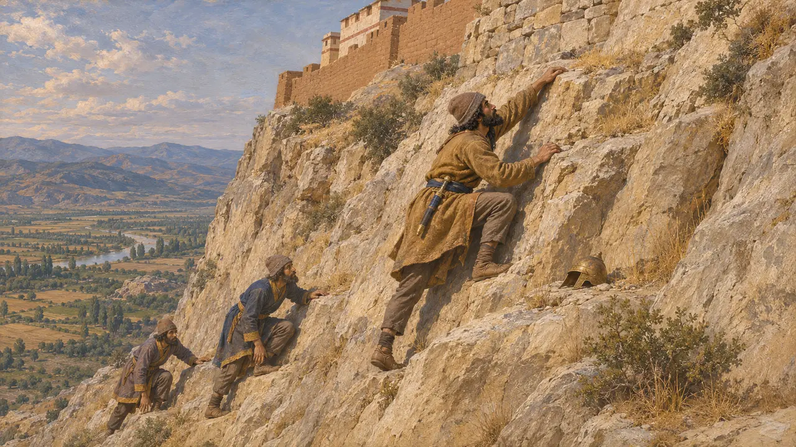
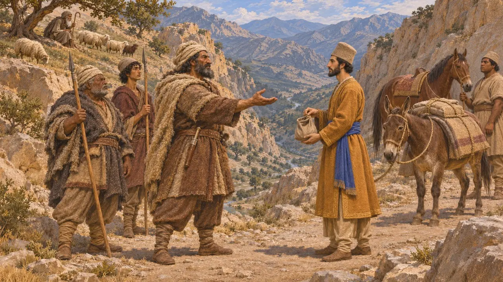
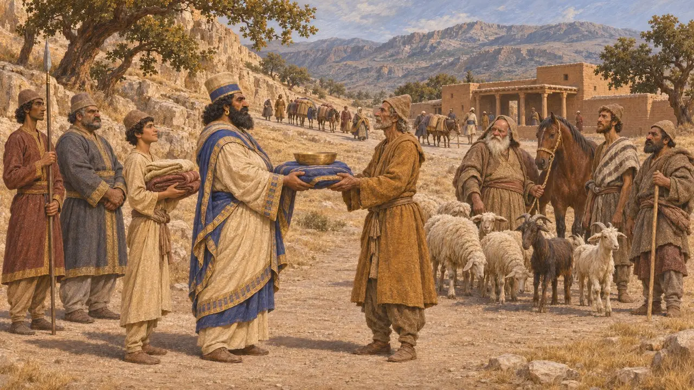
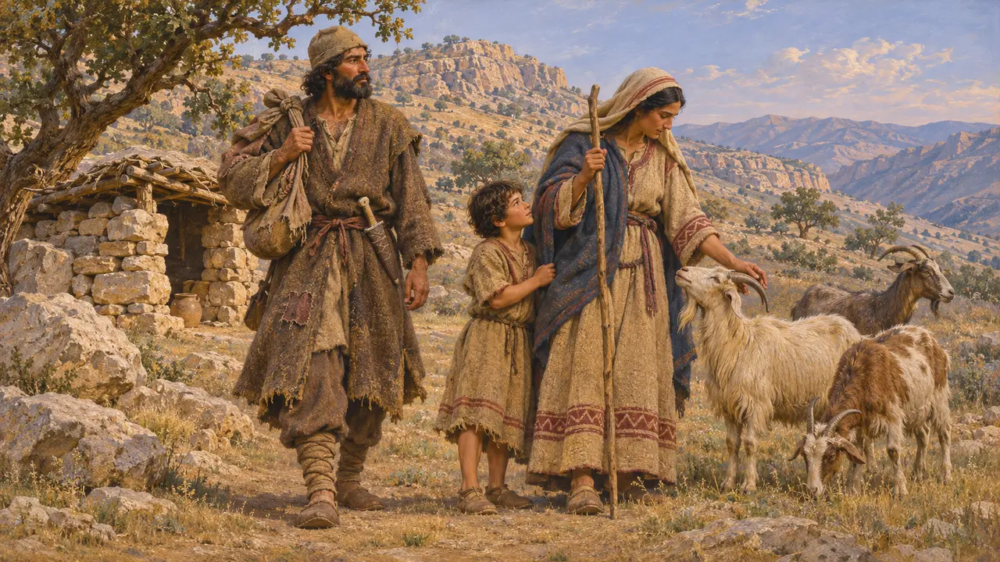
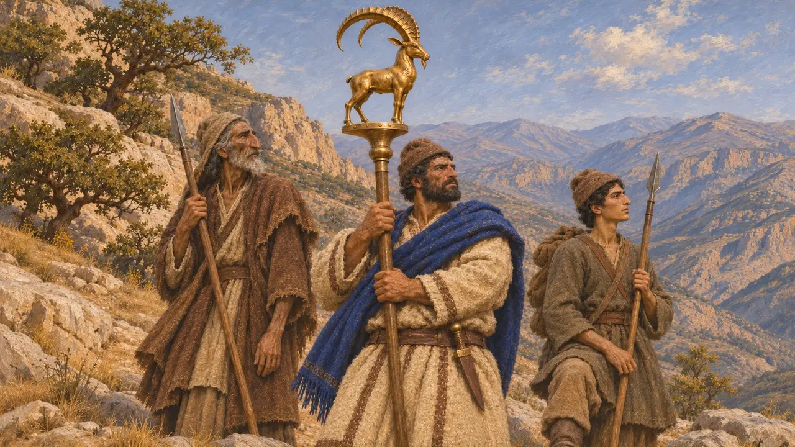

Die Bergvölker der Persis
Hirten- und Bergstämme der Persis und des Zagros, 6. bis 4. Jahrhundert v. Chr.
Im Spiel: Level 1: Das Grab des Gründers
Nicht alle Bewohner des persischen Stammlandes lebten in Städten oder bestellten die Täler. Herodot zählte mehrere persische Stämme zu den Nomaden, und spätere Autoren beschreiben Bergvölker wie die Uxier, die die Pässe zwischen Susa und der Persis beherrschten. Sie zeigen, dass die königliche Macht im Kernland zum Teil auf Abmachungen mit Hirten und Bergvölkern beruhte, nicht allein auf Gewalt.
Im Spiel: Die Bergräuber des Spiels greifen Pasargadae aus Lagern in den Bergen an. Keine Quelle berichtet von Überfällen auf Pasargadae; die Raubzüge sind eine spielerische Vereinfachung einer Beziehung, die griechische Autoren als Wegzölle und Geschenke beschreiben.

Bauern und Nomaden unter den Persern
Antiker BerichtHerodot zählt die Stämme der Perser auf. Ihm zufolge waren die Pasargaden, Maraphier und Maspier die führenden Stämme; die Panthialaier, Derusiaier und Germanier bestellten das Land, und die Daer, Marder, Dropiker und Sagartier waren Nomaden. Nach seiner Auffassung waren die Marder also keine Fremden, sondern Perser, die von der Viehzucht lebten.
Herodotus 1.125

Ein mardischer Kletterer bei Sardes
Antiker BerichtHerodot erzählt, wie Kyros die Zitadelle von Sardes einnahm. Ein mardischer Krieger namens Hyroiades sah, wie ein Lyder eine steile, unbewachte Felswand hinabkletterte, um einen heruntergefallenen Helm zu holen. Er stieg auf demselben Weg hinauf, andere Perser folgten, und die Zitadelle fiel. Die Geschichte legt nahe, dass im Heer des Kyros Männer aus den Bergen dienten.
Herodotus 1.84

Die Uxier und der Preis des Durchzugs
Antiker BerichtArrian berichtet, als Alexander 331 von Susa in die Persis zog, hätten die Uxier in den Bergen die Zahlung verlangt, die sie von den persischen Königen stets für die Benutzung des Passes erhalten hatten. Alexander griff sie stattdessen an und legte ihnen einen jährlichen Tribut an Pferden, Lasttieren und Schafen auf. Strabon nennt, Nearchos folgend, die Marder, Uxier, Elymaier und Kossaier als Raubvölker, die Zahlungen von den Königen erhielten.
Arrian, Anabasis 3.17; Strabo 11.13.6

Räuber oder Partner des Königs
UmstrittenDie griechischen Autoren stellen diese Zahlungen so dar, als kaufe sich der König von Räubern frei – ein Zeichen der Schwäche. P. Briant hingegen deutete sie als Gabentausch, der Hirtenverbände an den König band und ihm dafür Männer, Tiere und sichere Wege verschaffte. Die Persepolis-Festungstäfelchen zeigen die Persis als straff verwaltetes Land, was einen hilflosen König unwahrscheinlich macht, doch kein erhaltener persischer Text beschreibt die Bergstämme eindeutig.
P. Briant, État et pasteurs au Moyen-Orient ancien, 1982; P. Briant, From Cyrus to Alexander, 2002

Kyros als Sohn eines mardischen Räubers
Spätere LegendeNikolaos von Damaskus, der zur Zeit des Augustus schrieb und wahrscheinlich auf Ktesias zurückgriff, erzählte eine Geschichte, nach der Kyros' Vater ein Marder namens Atradates war, der vom Räuberhandwerk lebte, und seine Mutter eine Ziegenhirtin. Diese Erzählung vom Aufstieg aus der Armut widerspricht dem Kyros-Zylinder, auf dem sich Kyros Sohn des Kambyses und Nachkomme der Könige von Anschan nennt.
Nicolaus of Damascus, FGrH 90 F66; Cyrus Cylinder

Das Emblem neben dem Namen
UmstrittenDie Bergräuber führen einen großhörnigen Steinbock, das Tier der Luristan-Bronzen und der achämenidischen Metallarbeiten. Die Räuber sind eine Dramatisierung, und ihr Emblem ist es ebenso: Keine Quelle nennt ihre Stämme oder ihre Zeichen.
P. R. S. Moorey, Ancient Bronzes from Luristan, 1974
Quellen
- Herodotus 1.125
- Arrian, Anabasis 3.17
- Strabo 11.13.6
- P. Briant, État et pasteurs au Moyen-Orient ancien, 1982
- P. Briant, From Cyrus to Alexander, 2002
- Nicolaus of Damascus, FGrH 90 F66